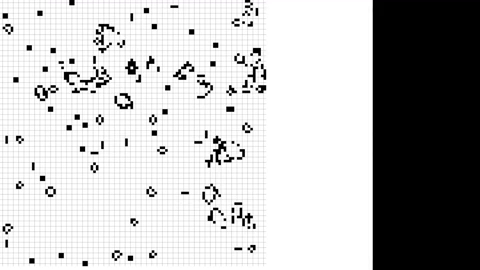

These are projects related more towards software engineering as opposed to cyber security. While cyber security is my main priority and what I would like to do as a future career, I still like software development of all kinds. I have found that becoming a better and more diversified programmer has increased my cyber security technical abilities. It's easier to secure software if I know how it functions.
This Website!!!
I really just wanted to use this place to talk about this website. Its made using HTML, CSS, and TypeScript (because statically typed languages are objectively better). I like making websites and is a thing I find fun in my personal time. Also making websites has helped with cyber security skills and knowledge.
Miscellaneous Projects:
These are some smaller miscellaneous projects I have worked on
Flappy Bird
This is a simple remake of the game Flappy Bird. This was my first introduction to OOP in python and OOP in general. I used tkinter for creating the UI. While it doesn't look so pretty I was really focusing on the game logic and creating my own classes to interact in a game.
Conway's Game Of Life

I made a simulation of the infamous Game of Life. It is a zero player game which outcome is determined by only the starting state. For this I just randomly generated the starting state every time you run the program. I made this in Java and made the UI in JavaFX.